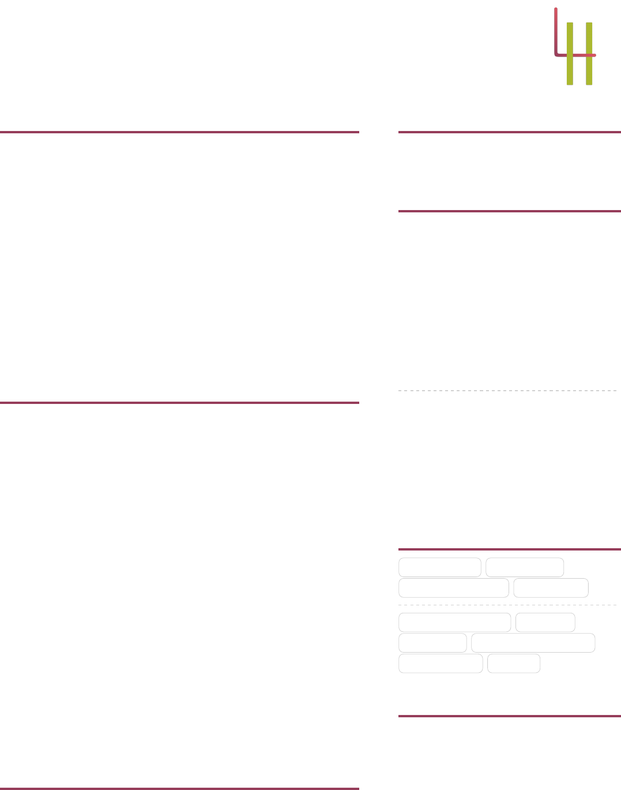

LEAH HELMRICH
Jewelry Designer
[ leahg.1993@gmail.com Ó 908-930-1653 R PO BOX 498 Jackson MO, 63755
½ Cape Girardeau, Missouri ® leahhelmrich.me ¯ linkedin.com/in/leah-helmrich
MY LIFE PHILOSOPHY
“Loving what you do is not required, but
doing what you love is.”
MOST PROUD OF
3
Appeared on JTV’s Jewel School
I made two different trips to the
Knoxville, TN headquarters of JTV.
The main goal of the trip was to film a
live broadcast to promote the kits and
products that Creating Unkamen was
wholesaling with Jewel School, as well
as to tape some tutorial footage for
the pieces. The first appearance was
May 30th and 31st, 2012, and a
second trip and appearance was made
August 22nd.
z
Cover Feature on "Step By Step Wire"
I created a square wire and beaded
necklace and submitted it to
Interweave publications for a standard
tutorial article. The editors liked it so
much, they decided to include it in
their "Best Of" special edition and
feature it on the cover!
STRENGTHS
Advanced Chainmaille Anodizing
Basic Silversmithing Beading
Cold Connections Sawcutting
Soldering Wirewrapping
EDUCATION
Working with Reactive Metals
Bill Seeley
Silversmithing I, II, and III
William Holland School Of Lapidary
Advanced Wire Wrapping
William Holland School Of Lapidary
Casting for Beginners
William Holland School Of Lapidary
Mixed Media - Push the Limits
William Holland School Of Lapidary
Mastering the Jeweler’s Saw
Thomas Mann
EXPERIENCE
Artisan Manager
Creating Unkamen
June 2007 – May 2017 ½ Fulton, MO
• Trained and managed a team of 4-6 other handmade artisans.
• Created 100+ PDF/Video tutorials for assorted chainmaille and
beaded jewelery.
• Designed and fabricated 50+ jewelry pieces for sale as kits.
• Managed all anodizing, oxidizing, and engraving processes.
• Appeared on JTV’s Jewel School representing Creating Unkamen.
• Published multiple tutorials in Interweave magazine publications.
• Wrote weekly, bi-weekly, and/or monthly blog posts and newsletters
for instruction, promotion, and inspiration.
• Assisted extensively in customer service and consultation.
PROJECTS
Angular Brass Linkage
Statement Necklace
• I started with a basic geometric shape and designed a number of
different sized and shaped link patterns. Half the links would be cut to
be open, and the others would be solid, so I could connect them
together.
• Using blank adhesive labels, I transferred the link designs onto 20
gauge sheet brass in preparation for piercing and sawing.
• After all the pieces were cut out and filed smooth, I slotted them
together and soldered the cuts of the open links, creating a solid chain.
The last step was to solder a few links for the chain of the toggle clasp
and to give the piece an interesting patina.
Layered Craters
Finger Ring
• Using three strips of wire in copper, bronze, and brass, I made three
nesting rings, each one a little bigger and a little wider than the one
inside it. The two outer rings had holes in a variety of sizes drilled
through them so you could see the layers of metal underneath.
• To form the ring, I carefully nested all the rings and then used a
dapping block to round the outside edges of the largest ring, flipping it
over frequently to create an even dome, trapping the two inner bands
inside.
PUBLICATIONS
• Helmrich, Leah (2016a). “Acute Angle Necklace”. In: Beading Daily
(Summer 2016).
• – (2016b). “Dipped and Dangly Earrings”. In: Jewelry Stringing (Spring
2016).
• – (2012). “Blossoming Lotus Necklace”. In: Step by Step Wire Jewelry
(The Best Of), Cover and 112–115.